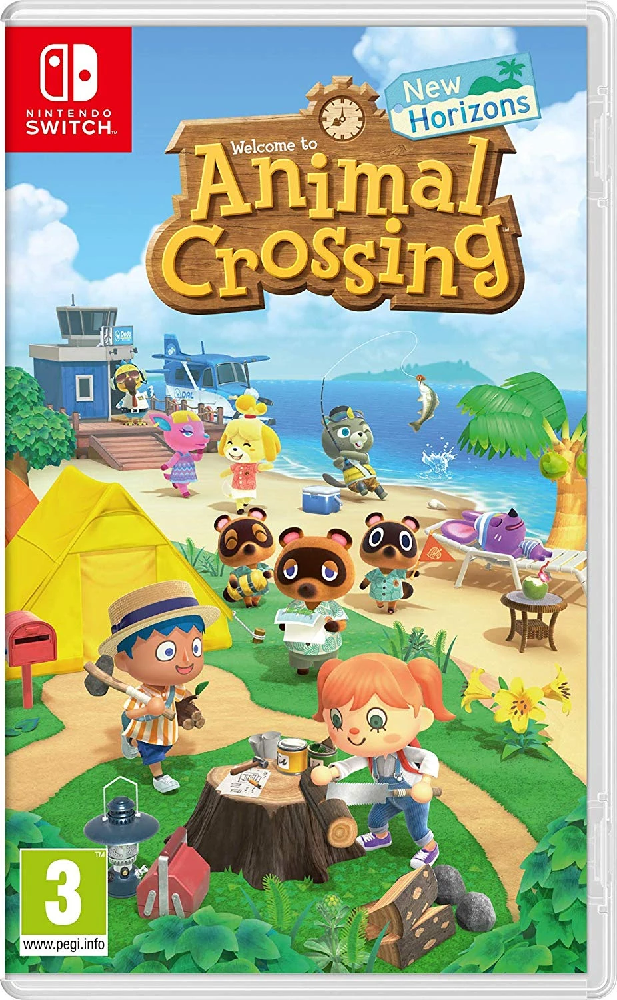
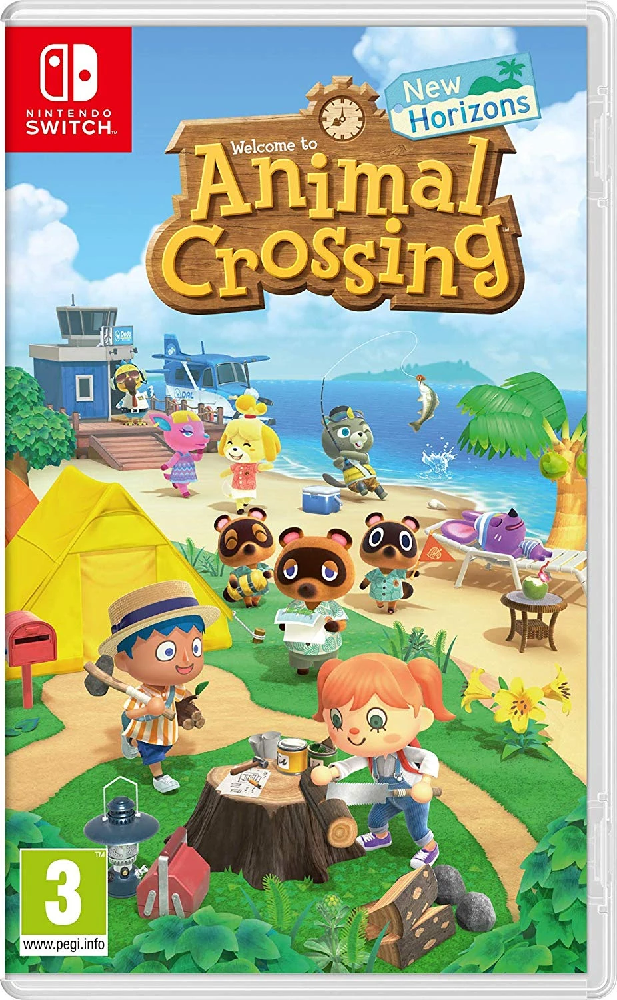

About
Animal Crossing is a social simulation video game series developed and published by Nintendo. The series was conceptualized and created by Katsuya Eguchi and Hisashi Nogami.
In the Animal Crossing games, the player assumes the role of a human character who moves into a rural village populated with anthropomorphic animals and lives there indefinitely. Gameplay is open-ended: players have no defined objectives but are instead encouraged to spend their time in the village performing any number of activities which include collecting items, planting plants, insect catching, fishing, and socializing with the village's residents. Animal Crossing games are played in real-time, utilizing the video game console's internal clock and calendar. Thus, the passage of time in the game world reflects that in reality, as well as the current season and time of day. Some in-game events, such as holidays or the growth of a tree, occur at certain times or require some duration of time to have passed.

Weather
Animal Crossing follows the internal clock of your device as well as your local weather. To see the current weather of your island/town, click below!
Villagers
Joey
Joey is a yellow duck with thick, dark-gray eyebrows, small dot eyes, an orange beak, and no hair. He wears a sumo loincloth, possibly due to his apparent goal of being a sumo wrestler in Animal Crossing: New Leaf.
As a lazy villager, Joey has a relaxed, laid-back lifestyle and will appear friendly toward the player. He often talks about food and is humorous or naïve during conversations. During conversations with other villagers, he generally gets along well with peppy, smug, and cranky villagers, while snooty and jock villagers may not get along with him due to their conflicting lifestyles. In New Horizons, Joey goes to sleep at 11 PM and wakes up at 8 AM.
Pietro
Pietro is a smug sheep villager in the Animal Crossing series. He first appeared in Animal Crossing: New Leaf and has appeared in all subsequent games. His name is derived from "pied," which means having a bright and multicolored patchwork appearance, referencing the color of his wool, or from "Pierrot" referencing his clown-like appearance. Similarly, his catchphrase is "honk honk," a common noise associated with clowns, also referring to his bulbous nose. His Japanese catchphrase, "gufufu," is a Japanese onomatopoeia for laughter.
Pietro is a smug villager, meaning he will come off as a polite gentleman, though also arrogant and conceited. If the player is female, he will occasionally flirt with them. He wakes up at 8:30 AM.
Judy
Judy is a bear cub with light blue and pastel pink coloration on her fur that fades together, a white face and rosy cheeks, with a small black nose, a letter v-shaped mouth, pale cream coloration inside her ears, white paw pads on her feet, and a white tail. Her eyelids are sky blue, and she has three thick black eyelashes on each eye, making it appear as if she is wearing light blue eyeshadow and mascara. Each of her dark purple eyes possesses a pupil shaped like a large four-pointed star and two tiny white ovals at a top and bottom corner, making her eyes look shiny or sparkly. When she's shocked, however, her eyes turn white with a small dark purple iris and black pupil in each eye, and also gains wrinkles around her eyes. Her eyelids do not appear to fully close when she is happy, with two white ovals shining through the black outline between the eyelids.
Judy has a snooty personality. She will appear uptown, classy, and chic. With this, she will appear rude, belittling and snobbish when talking to others, usually criticizing their dress sense or fashion. She is able to get on with cranky, big sister, smug, and other snooty villagers. She will have her fitness questioned by a jock villager. She will not get along with normal villagers, due to their kindness and politeness towards their neighbors.
Game List
You can create a stored list here and come back to it later. Create a list of Animal Crossing games you plan to play and check them off when you try them!
 Game List
Game List